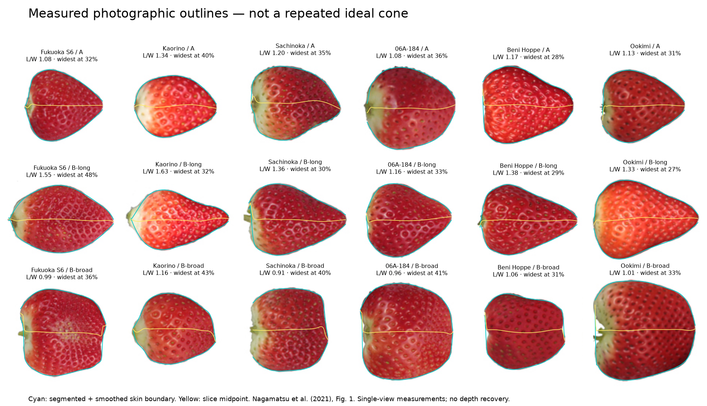
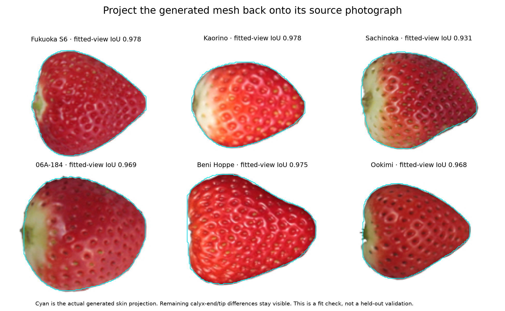
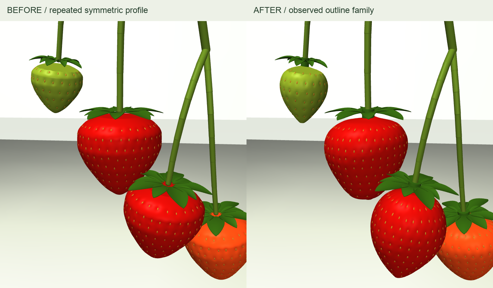

Strawberry shapes from observed curves.
18 photographic outlines. Six distinct 3D examples. Each keeps its own shoulder contour, taper and centerline. Compare the source view, then rotate the model to see the depth we still have to infer.
Loading meshes…
The nominal shapes have rebuilt collision geometry. Slider edits preview geometry only; they do not alter the recorded plant simulation.
What the photographs actually show
Cyan follows each fruit boundary; yellow follows slice midpoints. The two sides are measured separately. The long and broad examples belong to the same cultivars as the typical examples above them.

Parameters with meaning
| Trait | Evidence |
|---|---|
| Shoulder, taper, apex offset | Separate sides of photographed contour |
| Widest point and aspect ratio | Approximate pixel measurements |
| Depth, flattening, hidden lobes | Explicit assumptions; need another view |
| COM and inertia | Recomputed from collision volume and existing mass |
Why a symmetric cone failed
Strawberries grow as enlarged receptacles. Uneven development can change the sides differently. Shape studies therefore measure several directions, cross-sections and centerline curvature—not just length and width.
Li et al.: 3D shape measurement · UPOV anatomical shape traits, pp. 25–27
This is a geometry model informed by observations, not a simulation of cellular growth.
Does the generated mesh match the photographed outline?
The cyan contour below is the actual generated skin projected back into its source photograph. This checks reconstruction of the fitted view; it does not validate the unseen side.

Back in the complete plant
The example plant uses variation within one outline family. Its collision shapes and inertia were rebuilt before a fresh settling/contact run. The earlier plant dynamics are retained.

Method, raw measurements and limits
Research and reproduction · 18 digitized profiles · 3D parameters · Plant physics changes · Collision approximation audit · Fitted-view checks · Previous version
The photograph boundaries have roughly 1–2 pixel uncertainty. The reference set is selected, not a measured population distribution. Hidden shape, maturity effects, flesh compliance and bruising are not validated. Seed placement and calyx remain simplified.